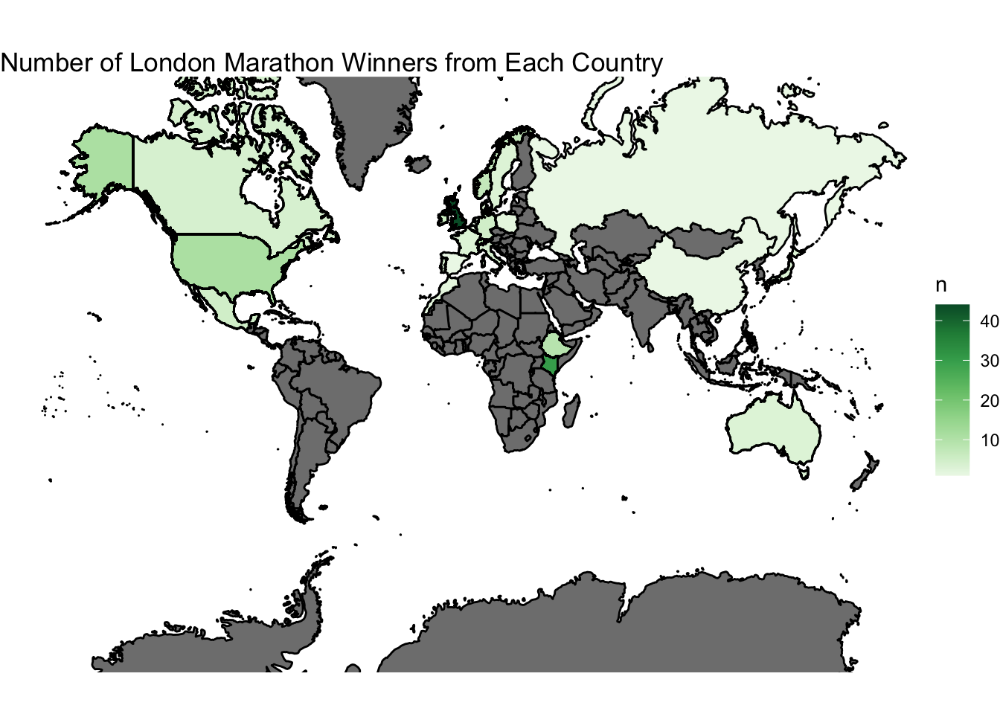
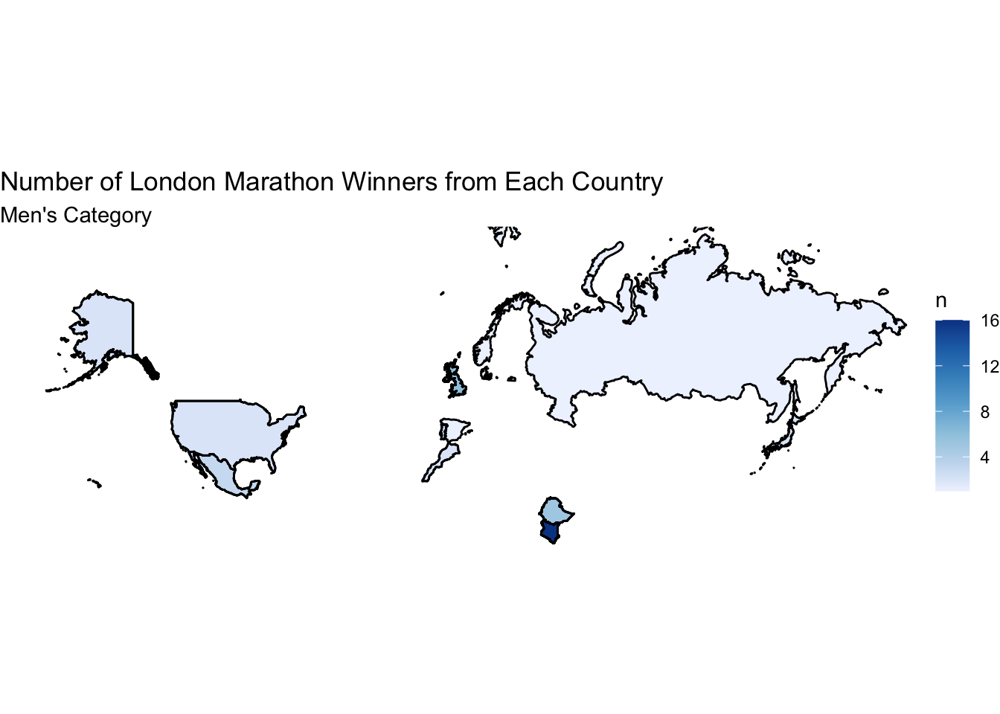
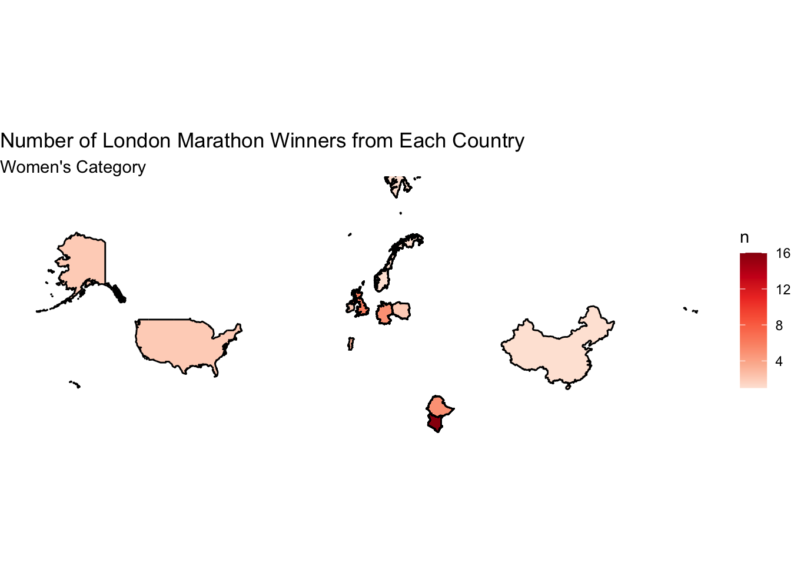
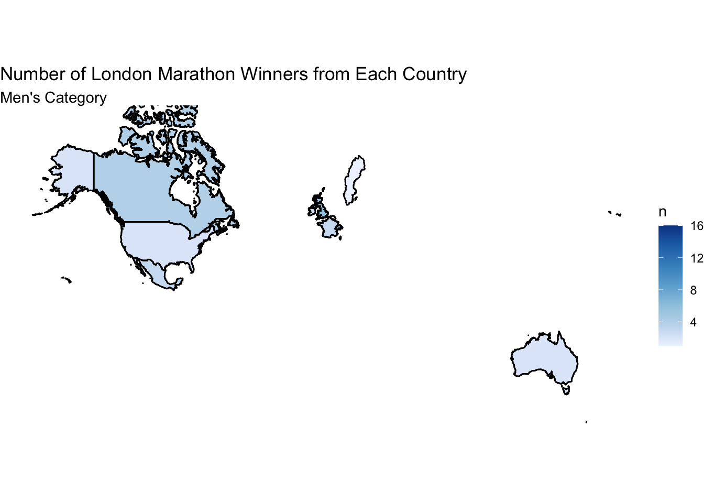
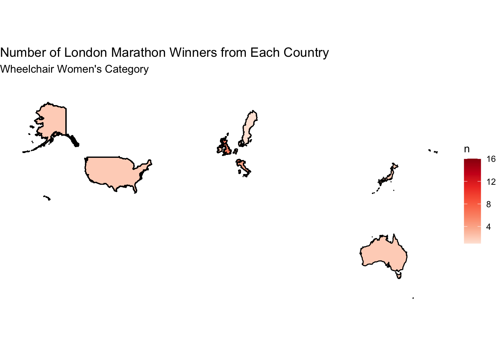

In this blog post I will be working with the London Marathon dataset created by Nicola Rennie (https://github.com/rfordatascience/tidytuesday/tree/master/data/2023/2023-04-25). I will specfically be looking at the winner’s subset. This dataset examines every winner of the marathon, their times, and nationality. All code used in this blog post can be seen at the end of the post.
There are 163 observations in this dataset. The variables we are most interested in looking at are:
Nationality, Nationality of the winner
and
Category, Category of Race
We will also use these variables to help wrangle our data:
Year, Year of that Race
Athlete, Name of the Winner
What countries produce the most London Marathon winners? I will explore that geographic distribution of the winners of the London Marathon. I will look at the overall distribution and then break it down by categories (Men, Women, Wheelchair Men, and Wheelchair Women). It is important to know that in order to map the winners onto a map, I will have to alter the name of some regions. For example, there is a winner from the USSR. For the sake of my map, I will rename it to Russia.
Primary Visualizations
Wins by Country

There are many countries that have never had a London Marathon Winner, with only 24 countries having a winner. The country with the most wins is the UK with 44 wins. Spain, Russia, Netherlands, China, and Belgium all only have 1 win. Europe seems to produce London Marathon winners.
Wins per Category Around the World
Men

Kenya has the most winners in the Men category of the race with 16 winners. The UK takes second place with 6, followed by Ethiopia with 5. Only 12 countries have male winners has shown by the map.
Women

Kenya also has the most winners in the Women category with 14 winners. The UK is in second with 7 winners, and Norway comes in third with 6. Only 10 countries have winners in this category.
Wheelchair Men

The UK has the most winners in the Men’s Wheelchair category. Switzerland come in second with 6 winners, and Canada in third with 4. There are 10 countries with wins in this category.
Wheelchair Women

The UK has the most wins in the Women’s Wheelchair category with 15 winners. The USA comes in second with 6 winners, and Italy is in third with 4. There are 10 countries with winners in this category.
Conclusion
Around the world, only 24 countries have had a London Marathon Winner. The UK has the most winners overall, with the majority of those coming from the Wheelchair categories. Kenya takes the cake for both the Men’s and Women’s categories. In the future, it would be interesting to look at each countries training techniques to see who that factors into the number of winners they produce. A flaw of this project is the fact we only have 24 countries with winners. This results in a world amp that looks more like a splatter painting of random countries.
Connection to Class
Although Gilbert is considered to be the “best” map projection, for this analysis I have decided on the Mercator projection. By using Mercator, it is easier and more effective to see the fill of the countries with less area, especially in Europe.